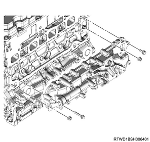

Oil cooler assembly removal (4JK1)
1. Battery ground cable disconnect
1. Open the engine hood assembly.
2. Disconnect the battery ground cable from the battery.
Caution
- Do not disconnect within 1 minute after turning OFF the ignition switch.
3. Raise vehicle using the jack.
2. Underguard removal
Note
- The following applies to models with an under air deflector.
1. Remove the under air deflector from the frame.
Note
- Remove the 5 bolts and clip.

- Bolt
- Clip
Note
- The following applies to models with front and rear underguard.
2. Remove the front underguard from the frame.
Note
- Remove the 5 bolts.
3. Remove the rear underguard from the frame.
Note
- Remove the 4 bolts.

- Front underguard
- Rear underguard
- Bolt
Note
- The following applies to models with front and rear underguard and an oil pan guard.
4. Remove the front underguard from the frame.
Note
- Remove the 5 bolts.
5. Remove the oil pan guard from the frame.
Note
- Remove the 4 bolts.
6. Remove the rear underguard from the frame.
Note
- Remove the 4 bolts.

- Front underguard
- Oil pan guard
- Bolt oil pan guard
- Bolt
- Rear underguard
3. Coolant drain
1. Drain coolant from the radiator.
Note
- Open the drain plug at the bottom of the radiator.

2. Remove the radiator cap from the radiator.
Warning
- In order to prevent burns, do not open the cap when the engine and radiator are hot.
- Heat liquid and steam may gush out by pressure.
4. Engine cover removal
1. Remove the engine cover from the engine.

- Engine cover
5. Oil filter element removal
1. Drain the engine oil from the oil tray.
Note
- Prepare the oil pan tray to catch the drain oil.
2. Remove the oil filter element from the oil filter bracket using special tool.

SST: 5-8840-0203-0 - oil filter wrench

- Oil filter wrench
6. Intake air duct removal
1. Remove the intake air duct from the turbocharger and the intercooler.
Note
- Remove the part together with the intake hose.

7. Blow-by hose disconnect
1. Disconnect the blow-by hose from the cylinder head cover.
8. Air cleaner assembly removal
1. Disconnect the harness connector from the MAF sensor.
2. Disconnect the harness connector from the barometric pressure sensor.
3. Disconnect the vacuum hose from the air cleaner assembly.
4. Disconnect the intake pipe from the turbocharger assembly.
5. Remove the air cleaner assembly from vehicle.

- Air cleaner assembly
- MAF sensor
- Vacuum hose
- Blow-by hose
- Intake pipe
- Barometric pressure sensor
9. Vacuum hose removal
1. Remove the vacuum hose from the turbocharger and the vacuum pipe.

10. Turbocharger water feed pipe disconnect
1. Disconnect the turbocharger water feed hose from the water feed and return pipe.

- Turbocharger water feed hose
- Turbocharger water return hose
11. Water pipe removal
1. Disconnect the turbocharger water feed hose from the outlet pipe.
2. Remove the water pipe from the cylinder head assembly.

12. Water hose disconnect
1. Disconnect the water hose from the oil cooler.

- Water hose
13. Exhaust manifold heat protector removal
1. Remove the exhaust manifold heat protector from the exhaust manifold.

14. EGR pipe removal
Note
- The following applies to models with an EGR.
1. Remove the EGR pipe from the inlet manifold and the exhaust manifold.

15. Turbocharger control solenoid disconnect
1. Disconnect the vacuum hose from the turbocharger control solenoid.
16. Turbocharger water return hose disconnect
1. Disconnect the turbocharger water return hose from the water feed and return pipe.
- Turbocharger water feed hose
- Turbocharger water return hose
17. Turbocharger feed oil pipe removal
1. Remove the turbocharger feed oil pipe from the turbocharger and the oil cooler.

- Turbocharger feed oil pipe
18. Oil return pipe removal
1. Remove the oil return pipe from the turbocharger and the crankcase.

19. Water feed and return pipe removal
1. Remove the water feed and return pipe from the turbocharger.

20. Exhaust pipe adapter removal
1. Remove the exhaust pipe adapter from the turbocharger.

21. Turbocharger bracket removal
1. Remove the turbocharger bracket from the turbocharger and the cylinder block.

22. Turbocharger assembly removal
1. Remove the turbocharger from the exhaust manifold.

23. Generator disconnect
1. Disconnect the harness from the generator.
24. Exhaust manifold removal
1. Remove the exhaust manifold from the cylinder head.

25. A/C compressor drive belt removal
1. Remove the A/C compressor drive belt from the pulley.

- A/C compressor drive belt
26. Cooling fan belt removal
1. Loosen the adjust bolt using a wrench.
Note
- Loosen the idle pulley tension adjust bolt.
2. Remove the cooling fan belt from the pulley.
27. Generator removal
1. Remove the upper bracket from the timing gear case and the generator.

2. Remove the generator from the lower bracket.

28. Water pipe removal
1. Disconnect the water pipe from the water intake pipe.
2. Remove the water pipe from the oil cooler.

29. Water intake pipe removal
1. Remove the water intake pipe from the oil filter and the oil cooler assembly.
Note
- Remove it with the hose attached.

30. Oil filter removal
1. Remove the oil filter from the oil cooler assembly.

31. Oil cooler assembly removal
1. Remove the oil feed pipe from the cylinder head and the oil cooler assembly.
Note
- Remove the oil feed upper pipe.
2. Remove the oil feed pipe from the cylinder block and the oil cooler assembly.
Note
- Remove the oil feed lower pipe.

- Oil feed upper pipe
- Oil feed lower pipe
3. Remove the oil cooler assembly from the cylinder block.
